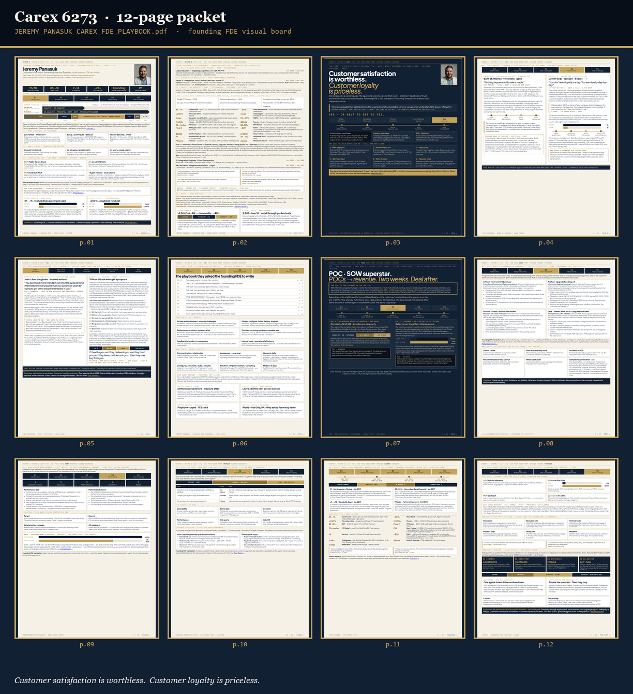
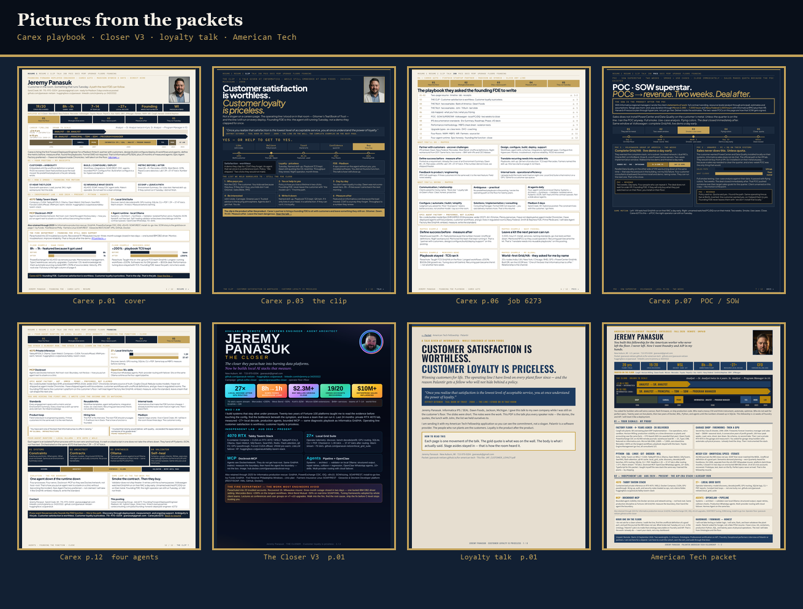
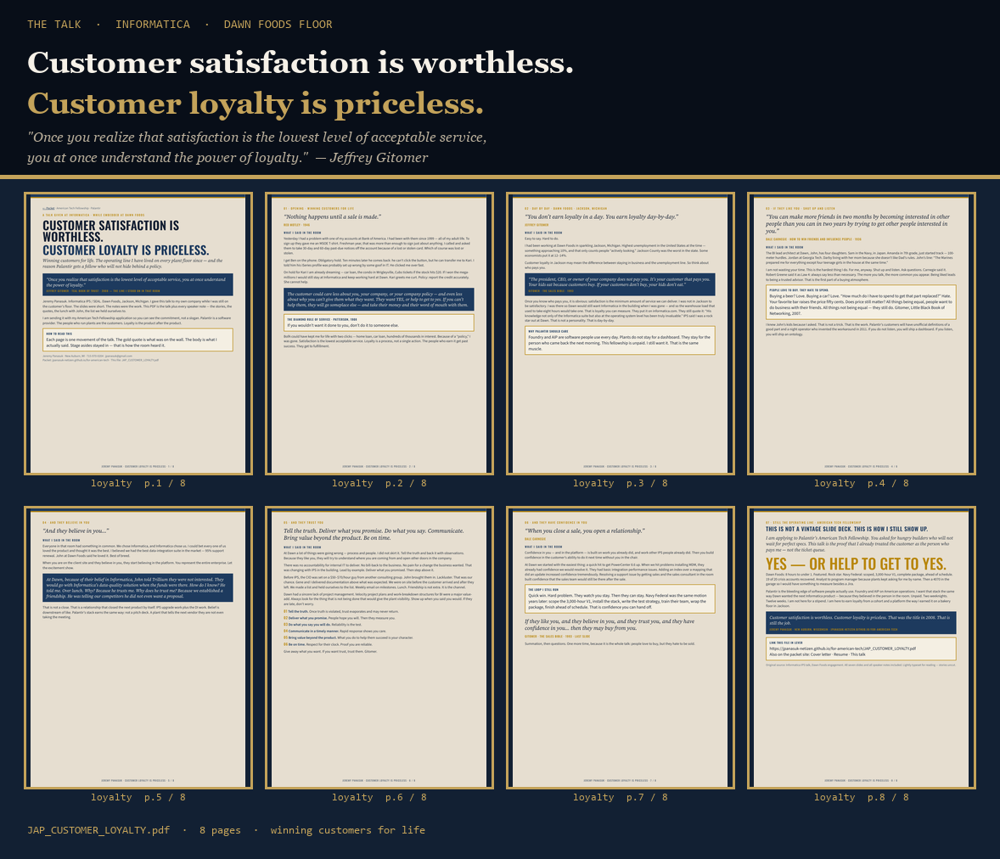
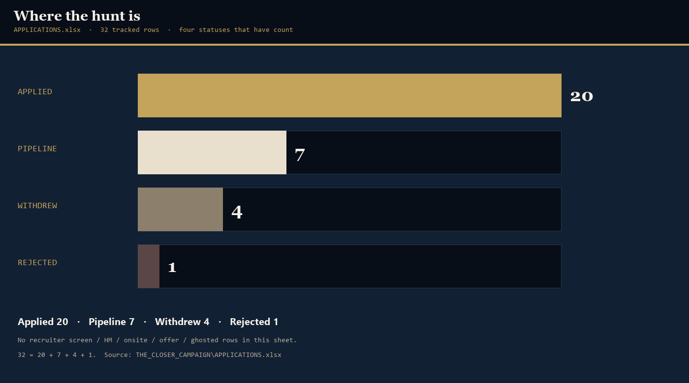

Visual packet · Carex 6273 · Madison hybrid 3 days · Direct hire
Customer satisfaction is worthless.Customer loyalty is priceless.

This Space is the board, not the long-scroll. Twelve pages of the Carex playbook as a contact sheet. The loyalty talk as a montage. The hunt graphed from 32 tracked rows. Same job 6273. Same slogan. Different pictures.
01 — The 12-page packet
One sheet. Every page of the Carex playbook.
Raster of JEREMY_PANASUK_CAREX_FDE_PLAYBOOK.pdf — 12 pages. Cover, clip, talk, job 6273 map, POC/SOW, IPS artifacts, four-agent runtime. Not a twin of the role long-scroll.

02 — Pictures from the packets
Pages they can actually look at.
Carex cover, clip, job map, POC/SOW, four agents. Closer V3 page one. Loyalty cover. American Tech packet. Real PDFs. No invented resume text.

03 — The talk
Satisfaction is worthless. Loyalty is Tuesday.
JAP_CUSTOMER_LOYALTY.pdf — 8 pages. Informatica talk, given on Dawn Foods floor. Gitomer on the wall. The montage is the talk, not a caption.

04 — The hunt
Where it stands. Four counts. Nothing else.
APPLICATIONS.xlsx. 32 tracked rows. Applied 20. Pipeline 7. Withdrew 4. Rejected 1. No invented numbers.

Also live
Role long-scroll (untouched) GitHub Pages The Closer Follow-up Hammer